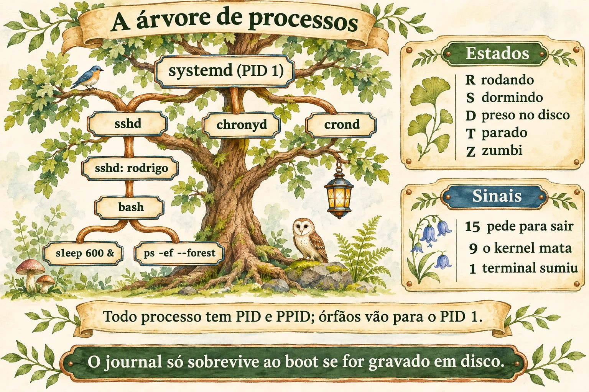
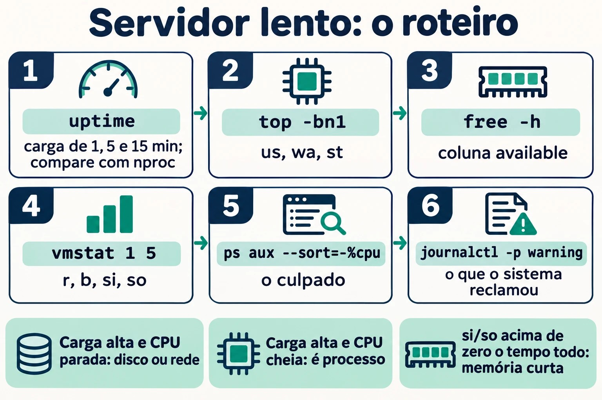
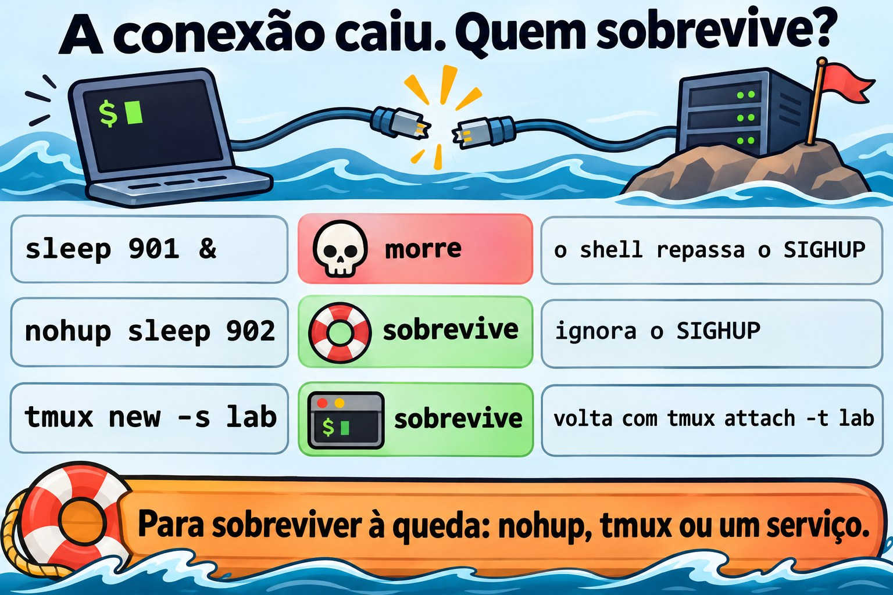
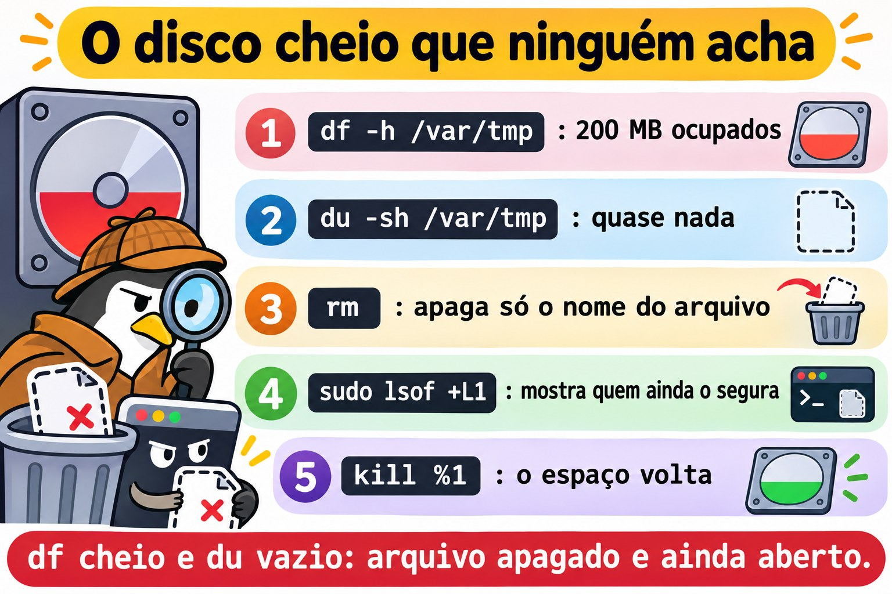

Aula 2.3 · Processos e logs
Terceira aula do Módulo 2. O telefone toca: "o servidor está lento". É a frase mais comum do suporte e a mais vaga. Lento por quê? Um processo comendo processador? A memória acabou e o sistema está usando swap? Um disco engasgado segurando todo mundo? Hoje você aprende a responder em cinco minutos, pelo SSH, sem reiniciar nada: quem está rodando, quanto cada um consome, como pedir educadamente que um programa pare e como obrigá-lo, e onde o sistema anotou o que aconteceu antes de você chegar. No fim, você sabe ler o journal como quem lê o prontuário de um paciente.
| Ficha | Aula 2.3 |
|---|---|
| Módulo | M2 · Sistema, usuários e permissões, aula 3 de 8 |
| Quando | Semana 4 |
| Ao final você consegue | Listar e filtrar processos com ps, pgrep e top; ler as colunas que importam (PID, PPID, %CPU, %MEM, STAT); explicar o que é a carga média; enviar sinais com kill e saber quando usar cada um; mudar a prioridade com nice e renice; rodar trabalhos em segundo plano que sobrevivem ao logout; achar no journal o que aconteceu, quando e com quem; tornar o journal permanente |
| Pré-requisitos | Aula 2.2 (free -h, coluna available; journalctl -k); Aulas 1.5 e 1.6 (grep e pipes) |
| Tempo | Cerca de 2h |
| Snapshots | m2a3-inicio e m2a3-fim nas duas VMs |
1 · Aquecimento
Três perguntas, de cabeça. Escreva as respostas; o Gabarito confere no fim.
- No Windows, você abre o Gerenciador de Tarefas e clica em "Finalizar tarefa". Palpite: o programa tem chance de salvar o que estava fazendo antes de fechar, ou ele simplesmente some?
- Você roda um script longo pelo SSH, a sua conexão cai. Palpite: o script continua rodando no servidor ou morre junto?
- O
topmostraload average: 4.00. Palpite: isso é bom, ruim, ou depende de quê?
2 · Por que importa
"Está lento" e "parou" são metade dos chamados. Quem resolve não é quem sabe mais comandos; é quem tem um roteiro e o segue sempre na mesma ordem: carga → processador → memória → disco → o processo culpado → o que o log diz. Com esse roteiro, você chega no servidor, roda quatro comandos e diz ao cliente o que está acontecendo, antes de ele terminar de explicar.
E há o reflexo que faz estrago: kill -9. O programa travou, o administrador manda o -9, o programa some. Mas o banco de dados não teve tempo de gravar o que estava na memória, o arquivo de trava ficou para trás, e o serviço não sobe mais. Saber a diferença entre pedir para sair e arrancar da tomada é o que separa resolver de criar o próximo chamado.
Por fim, o log. Quando o cliente diz "ontem à noite caiu", você não estava lá. O journal estava. Mas só se ele for gravado em disco: na configuração padrão do Rocky, o journal fica na memória e some a cada boot. O "o que aconteceu antes de reiniciar?" morre junto. Hoje você conserta isso nas duas VMs.
3 · Modelo mental
Todo processo é um filho. Ele tem um número (PID), um pai (PPID), um dono, um estado e uma caixa de correio de sinais. Você não manda num processo; você manda uma carta a ele.
systemd (PID 1) ← o avô de todos; adota os órfãos
├─ sshd ← serviço
│ └─ sshd: student ← a sua conexão
│ └─ bash ← o seu shell
│ ├─ sleep 600 & ← um filho em segundo plano (job)
│ └─ ps -ef --forest ← o comando que você acabou de digitar
├─ chronyd
└─ crondQuatro ideias carregam a aula:
| Ideia | O que quer dizer | Consequência |
|---|---|---|
| Árvore | Todo processo nasce de outro (fork); o primeiro é o systemd, PID 1 | Matar o pai pode levar os filhos junto, ou deixá-los órfãos, adotados pelo PID 1 |
| Estado | Rodando (R), dormindo esperando algo (S), preso esperando disco (D), parado (T), zumbi (Z) | Um D não responde a sinal nenhum, nem ao -9: ele espera o disco |
| Sinal | Uma mensagem numerada: 15 pede para sair, 9 mata, 1 avisa "o terminal sumiu" | O processo pode tratar o 15 e o 1; o 9 nunca chega até ele, o kernel age direto |
| Registro | Tudo o que o processo escreve na saída de erro, e tudo o que o kernel e o systemd veem, vai para o journal | Se não foi gravado em disco, sumiu no boot |


4 · Conceito em camadas
Essencial
Ver os processos. Dois estilos de ps sobreviveram na prática; decore um de cada:
ps aux # estilo BSD: todos, com %CPU, %MEM, dono
ps -ef # estilo Unix: todos, com PPID (o pai)
ps -ef --forest # a árvore
ps -o pid,ppid,user,stat,%cpu,%mem,cmd -p 1234 # só as colunas que você quer, de um PID| Coluna | Quer dizer |
|---|---|
PID | O número do processo; único enquanto ele vive |
PPID | O número do pai |
USER | O dono; é com as permissões dele que o processo age (Aula 2.7) |
%CPU | Quanto do processador ele usou (média desde que começou, no ps; agora, no top) |
%MEM e RSS | Quanto da memória física ele ocupa |
STAT | O estado: R, S, D, T, Z, mais letras de detalhe (s = líder de sessão, + = em primeiro plano, < = prioridade alta, N = prioridade baixa) |
TTY | O terminal; ? quer dizer que não tem, como os serviços |
Achar um processo pelo nome. pgrep responde com o PID; pidof também; ps com grep funciona, mas aparece o próprio grep na lista:
pgrep -a sshd # PID e linha de comando
pgrep -u student # todos os processos do usuário
pidof chronydO painel ao vivo: top. Abra e aprenda cinco teclas: P ordena por processador, M por memória, 1 mostra cada núcleo, k manda um sinal, q sai. As cinco primeiras linhas são o resumo do servidor:
top - 14:02:11 up 3 days, 2 users, load average: 0.42, 0.30, 0.25 ← carga de 1, 5 e 15 minutos
Tasks: 128 total, 1 running, 127 sleeping, 0 stopped, 0 zombie
%Cpu(s): 2.0 us, 1.0 sy, 0.0 ni, 96.5 id, 0.5 wa, 0.0 hi, 0.0 si, 0.0 st
MiB Mem : 1967.4 total, 210.3 free, 612.9 used, 1144.2 buff/cache
MiB Swap: 2048.0 total, 2048.0 free, 0.0 used. 1354.5 avail MemNa linha %Cpu(s), três números contam a história: us (programas trabalhando), wa (processador parado esperando disco) e st (tempo que o hipervisor roubou da VM para dar a outra). id alto e wa alto ao mesmo tempo: o problema é o disco, não o processador.
A carga média. O load average é o número médio de processos que querem o processador ou estão esperando disco (estados R e D). Compare com o número de núcleos (nproc): carga 4 numa máquina de 4 núcleos é cheia; numa de 16, é folga; numa de 1, é fila. Os três números, de 1, 5 e 15 minutos, dizem para onde vai: 4.0, 2.0, 0.5 está piorando agora; 0.5, 2.0, 4.0 está melhorando.
Sinais. kill não mata: manda um sinal. Os que você usa:
| Sinal | Número | O que faz | Quando |
|---|---|---|---|
SIGTERM | 15 | Pede para terminar; o programa pode salvar, fechar arquivos, apagar o arquivo de trava | Sempre primeiro. É o padrão do kill |
SIGKILL | 9 | O kernel remove o processo na hora; ele não fica sabendo | Só depois que o 15 falhou e você esperou |
SIGHUP | 1 | "O terminal desligou". Muitos serviços entendem como "releia a configuração" | Recarregar um serviço antigo sem derrubar |
SIGINT | 2 | O que o Ctrl+C manda | Interromper o que está no terminal |
SIGSTOP e SIGCONT | 19 e 18 | Congelar e descongelar; o Ctrl+Z manda um primo do 19, o SIGTSTP | Pausar sem matar |
kill 1234 # manda o 15
kill -9 1234 # manda o 9
kill -l # lista todos os sinais
pkill -u fulano sleep # manda o 15 a todos os "sleep" do fulano
killall sleep # manda o 15 a todos os "sleep", de todo mundoOnde ficam os logs. Duas fontes, que hoje convivem:
| Fonte | O que é | Como ler |
|---|---|---|
| Journal do systemd | Banco binário com tudo: kernel, serviços, login, com data, prioridade e unidade | journalctl |
Arquivos em /var/log | Texto, gravado pelo rsyslog a partir do journal, e por programas que escrevem direto | less, tail -f, grep |
No Rocky, o rsyslog vem instalado e grava /var/log/messages e /var/log/secure (logins e sudo). No Debian 13, ele não vem: o journal é a fonte, e /var/log tem pouca coisa além dos logs do apt e do dpkg.
Intermediário
journalctl, os filtros que resolvem. O journal é grande; o valor está em filtrar:
| Pergunta | Comando |
|---|---|
| O que aconteceu neste boot? | journalctl -b |
| E no boot anterior, antes de cair? | journalctl -b -1 (só se o journal for permanente) |
| Que boots o journal conhece? | journalctl --list-boots |
| Só um serviço | journalctl -u sshd (Rocky) ou -u ssh (Debian) |
| Só erros e piores | journalctl -p err (níveis: emerg, alert, crit, err, warning, notice, info, debug) |
| Numa janela de tempo | journalctl --since '2026-11-02 08:00' --until '09:30'; ou --since '-1h', --since yesterday |
| Ao vivo | journalctl -f |
| As últimas linhas | journalctl -n 50 |
| De um programa, pelo nome | journalctl -t sudo; journalctl _COMM=sshd |
| De um PID | journalctl _PID=1234 |
Sem paginação, para usar com grep | journalctl --no-pager |
| Com a explicação do erro, quando existe | journalctl -xe |
Os filtros se somam: journalctl -u sshd -p warning --since today é "os avisos do SSH de hoje".

O journal que some no boot. O systemd-journald guarda em /var/log/journal/ se a pasta existir; se não, guarda em /run/log/journal/, que fica na memória e some no boot. Quem decide é a opção Storage= em /etc/systemd/journald.conf:
Storage= | Comportamento |
|---|---|
auto (o padrão) | Grava em disco se /var/log/journal/ existir; senão, só na memória |
persistent | Cria a pasta e grava em disco |
volatile | Só na memória |
No Rocky 9, a pasta não existe depois da instalação: o journal é volátil e o rsyslog é quem guarda o histórico em /var/log/messages. No Debian 13, a pasta é criada na instalação e o journal já é permanente. Você vai conferir as duas no lab, porque "o padrão" muda entre versões e o que vale é o que está na máquina.
Prioridade: nice e renice. O nice vai de -20 (mais prioridade) a 19 (menos). O padrão é 0. Um processo "gentil" (nice alto) cede o processador aos outros:
nice -n 10 tar czf /tmp/backup.tgz /etc # começa já com nice 10
renice -n 15 -p 1234 # muda um que já está rodando
ps -o pid,ni,cmd -p 1234 # confereUsuário comum só pode aumentar o nice dos próprios processos (ficar mais gentil). Diminuir, ou mexer nos dos outros, exige root. No top, a coluna NI mostra o valor, e PR mostra a prioridade que o kernel calculou a partir dele.
Primeiro e segundo plano. No shell, um comando com & no fim roda em segundo plano, como um job:
| Comando | O que faz |
|---|---|
comando & | Roda em segundo plano; o shell mostra [1] 4321 (número do job e PID) |
Ctrl+Z | Pausa o que está em primeiro plano |
jobs -l | Lista os jobs deste shell |
bg %1 | Continua o job 1 em segundo plano |
fg %1 | Traz o job 1 para o primeiro plano |
kill %1 | Manda o 15 ao job 1 |
Jobs são do shell: se o shell morre, ele manda SIGHUP aos filhos, e eles morrem junto. Para sobreviver ao logout:
| Jeito | Como | Quando |
|---|---|---|
nohup comando & | Ignora o SIGHUP; a saída vai para nohup.out | Um comando avulso, rápido de lembrar |
tmux (ou screen) | Uma sessão de terminal que continua no servidor; você sai e volta com tmux attach | O jeito do dia a dia: atualização longa, cópia grande |
systemd-run --user ou uma unidade de serviço | O systemd cuida do processo | Coisas que precisam rodar sempre (Módulo 4) |
Ponte Windows
| No Windows | No Linux | O que muda |
|---|---|---|
| Gerenciador de Tarefas, aba Processos | top, ps aux | O top funciona pelo SSH e mostra a carga média, que o Windows não mostra |
| "Finalizar tarefa" | kill PID (15) | O Linux pede primeiro; o programa pode se despedir |
| "Finalizar árvore de processos" | kill -9, ou pkill -P PPID para os filhos | |
| Prioridade: "Abaixo do normal" | renice -n 10 | A escala é invertida: número maior, prioridade menor |
| Visualizador de Eventos | journalctl | Filtros na linha de comando em vez de cliques |
| Logs de Aplicativo, Sistema, Segurança | journalctl -u serviço, journalctl -k, /var/log/secure ou journalctl -t sudo | |
| Tarefa que continua depois do logoff | tmux, nohup, ou um serviço |
Avançado
/proc/PID/, o processo por dentro. Cada processo tem uma pasta: /proc/1234/cmdline (a linha de comando), /proc/1234/status (estado, memória, dono), /proc/1234/fd/ (os arquivos abertos, como links), /proc/1234/cwd (a pasta em que ele está). O ps e o top leem dali. Quando um disco está cheio e você não acha o arquivo, ls -l /proc/*/fd 2>/dev/null | grep deleted mostra o arquivo apagado que um processo ainda segura aberto: o espaço só volta quando o processo fecha.
Zumbi e órfão. Um processo que terminou fica na tabela como Z até o pai ler o código de saída dele. Um zumbi não gasta processador nem memória, só uma linha na tabela; não adianta mandar kill a ele, porque ele já morreu. Quem resolve é o pai: ou ele lê, ou ele morre, e aí o systemd adota e limpa. Um órfão é o contrário: o pai morreu e o filho continua vivo, adotado pelo PID 1.
O estado D. Um processo em D (uninterruptible sleep) está dentro do kernel esperando o disco ou a rede (um NFS que caiu, por exemplo). Nenhum sinal o tira de lá, nem o 9. Se você vê vários em D e a carga alta com o processador parado, o problema está no armazenamento. Reiniciar o servidor pode até travar no desligamento por causa deles.
systemd-cgls e systemd-cgtop. O systemd agrupa os processos de cada serviço num cgroup. O systemd-cgls mostra a árvore por serviço; o systemd-cgtop mostra o consumo por serviço, e não por processo. Num servidor com um serviço que abre cem processos, é ali que você vê quem é o culpado.
sudo journalctl × grupos. Sem sudo, o journalctl mostra só as mensagens do próprio usuário. Membros do grupo wheel (Rocky), adm (Debian) ou systemd-journal (os dois) leem tudo sem sudo.
5 · Rocky × Debian
| O quê | Rocky 9 | Debian 13 |
|---|---|---|
| Journal em disco depois da instalação | Não: /var/log/journal/ não existe, journal volátil | Sim: a pasta existe e o journal é permanente |
rsyslog | Instalado e ativo; grava /var/log/messages e /var/log/secure | Não vem instalado; o journal é a fonte |
Log de logins e sudo em texto | /var/log/secure | Não há; use journalctl -t sudo e journalctl -u ssh |
| Nome da unidade do SSH | sshd | ssh |
Quem lê o journal inteiro sem sudo | Grupos wheel e systemd-journal | Grupos adm e systemd-journal |
tmux | dnf install tmux | apt install tmux |
pstree | Pacote psmisc, em geral instalado | Pacote psmisc, pode faltar |
killall | Pacote psmisc | Pacote psmisc |
6 · Lab guiado
Faça tudo na rocky-lab primeiro e repita na debian-lab. Onde o Debian muda, o passo avisa. Abra dois terminais SSH na mesma VM: o terminal 1 para criar os processos, o terminal 2 para observar.


Passo 0 · Snapshot
No Proxmox, tire o snapshot m2a3-inicio das duas VMs. Se algo der muito errado, você volta para cá.
Passo 1 · A sua árvore
No terminal 1:
echo $$ # o PID do seu shell
ps -o pid,ppid,user,stat,cmd -p $$
ps -ef --forest | grep -B3 -A1 "$$"Siga o PPID para cima: o seu bash é filho de um sshd: student, que é filho de outro sshd, que é filho do systemd, PID 1. Agora confira o avô:
ps -o pid,user,cmd -p 1
nproc # quantos núcleos a VM tem
uptime # há quanto tempo está ligada e a cargaAnote o nproc. Você vai precisar dele para ler a carga daqui a pouco.
Passo 2 · Primeiro e segundo plano
Ainda no terminal 1:
sleep 600 & # [1] e um PID
sleep 700 # este prende o terminalO segundo sleep prendeu o terminal. Aperte Ctrl+Z. O shell responde [2]+ Stopped. Agora:
jobs -l # o 1 rodando, o 2 parado
ps -o pid,stat,cmd -C sleep # o parado aparece com STAT T
bg %2 # o 2 volta a rodar, em segundo plano
jobs -l
fg %1 # traz o 1 para a frenteO terminal está preso de novo, agora no sleep 600. Aperte Ctrl+C: ele recebe o SIGINT e termina. Limpe o outro:
kill %2
jobs -l # vazioDecida 1 · O terminal preso. Você rodou pelo SSH uma cópia que vai levar uma hora, sem &. O terminal está preso e você precisa dele. O que faz sem perder a cópia?
- A)
Ctrl+Ce roda de novo com&no fim. - B)
Ctrl+Ze depoisbg. - C) Abre outro terminal e manda
kill -STOPna cópia. - D) Fecha a janela do SSH; a cópia continua sozinha.
Escolha a letra antes de olhar a tabela.
| Se você marcou | Resultado | Por quê |
|---|---|---|
| A | ❌ Errada | O Ctrl+C interrompe a cópia, e você recomeça do zero. |
| B | ✅ Certa | O Ctrl+Z pausa e devolve o terminal; o bg faz a cópia continuar em segundo plano, do ponto em que estava. |
| C | ❌ Errada | O SIGSTOP congela a cópia, mas o terminal 1 continua preso esperando por ela. Você só trocou de problema. |
| D | ❌ Errada | Quando a conexão cai, o shell recebe SIGHUP e repassa aos filhos. A cópia morre. O Passo 5 mostra isso ao vivo. |
Para fixar: Ctrl+Z, bg. E, se ela precisar sobreviver ao logout, isso ainda não basta: veja o Passo 5.
Passo 3 · Fazer barulho e achar o culpado
No terminal 1, crie um processo que come um núcleo inteiro:
yes > /dev/null &No terminal 2, abra o top. Aperte P (ordena por processador). O yes vai para o topo, perto de 100%. Aperte 1 para ver os núcleos separados: um deles está cheio. Repare na linha %Cpu(s): o us subiu. Espere um minuto e olhe a carga: o primeiro número caminha para 1.
Saia com q e confira a mesma coisa sem painel, do jeito que você cola num chamado:
uptime
ps aux --sort=-%cpu | head -5
top -bn1 | head -12 # um retrato do top, em textoAgora baixe a prioridade dele. No terminal 2, como o seu usuário:
PID=$(pgrep -x yes)
ps -o pid,ni,pri,cmd -p $PID # NI 0
renice -n 10 -p $PID
ps -o pid,ni,pri,cmd -p $PID # NI 10
renice -n 0 -p $PID # tente voltarO último renice falha com Permission denied. Você conseguiu ficar mais gentil, mas não consegue voltar atrás sem ser root.
Decida 2 · Quem pode o quê. Um usuário comum roda um processo com nice 10. Qual destes ele consegue fazer sozinho?
- A)
renice -n 5(de volta para 5) - B)
renice -n 15 - C)
renice -n -5 - D)
renice -n 15num processo de outro usuário
Escolha a letra antes de olhar a tabela.
| Se você marcou | Resultado | Por quê |
|---|---|---|
| A | ❌ Errada | Baixar o nice é pedir mais prioridade. Usuário comum só sobe. |
| B | ✅ Certa | Subir o nice do próprio processo é sempre permitido: ele está cedendo lugar aos outros. |
| C | ❌ Errada | Nice negativo é prioridade acima do normal, só root. |
| D | ❌ Errada | Processo de outro usuário, só root, nem que seja para deixar mais gentil. |
Para fixar: nice maior, prioridade menor. Usuário comum só sobe, e só nos seus.
Termine o yes do jeito educado e confira:
kill $PID
pgrep -x yes; echo "rc=$?" # rc=1: não há mais nenhumPasso 4 · Pedir para sair e arrancar da tomada
Crie um "serviço" de mentira que se comporta como um de verdade: grava um arquivo de trava quando sobe, recusa subir se a trava existe e apaga a trava quando recebe SIGTERM.
cat > ~/lab-servico.sh <<'EOF'
#!/bin/bash
TRAVA=/tmp/lab-servico.lock
if [ -e "$TRAVA" ]; then
echo "ERRO: já está rodando (PID $(cat "$TRAVA")). Saindo." >&2
logger -t lab-servico "recusei subir: trava $TRAVA existe"
exit 1
fi
echo $$ > "$TRAVA"
trap 'logger -t lab-servico "TERM recebido, trava removida"; rm -f "$TRAVA"; exit 0' TERM
logger -t lab-servico "iniciado, PID $$"
while true; do sleep 2; done
EOF
chmod +x ~/lab-servico.shNo terminal 1:
~/lab-servico.sh &
cat /tmp/lab-servico.lock # o PID deleNo terminal 2, acompanhe o que ele diz:
journalctl -t lab-servico -fNo terminal 1, mande o SIGTERM:
kill $(cat /tmp/lab-servico.lock)
ls /tmp/lab-servico.lock # No such fileO terminal 2 mostrou TERM recebido, trava removida, uns dois segundos depois do kill. Essa demora é o programa terminando o que estava fazendo (o sleep 2) antes de tratar o sinal. É o que um banco de dados faz para gravar o que estava na memória. Deixe o terminal 2 aberto; você volta a usar a trava na Quebra B.
Decida 3 · Os segundos de espera. Você manda kill num serviço e ele não some na hora. O que faz?
- A) Manda
kill -9imediatamente: ele travou. - B) Espera alguns segundos e confere com
ps -p PID; só se ele continuar vivo depois de um tempo razoável,kill -9. - C) Reinicia o servidor.
- D) Manda
kill -1, que é mais forte que o 15.
Escolha a letra antes de olhar a tabela.
| Se você marcou | Resultado | Por quê |
|---|---|---|
| A | ❌ Errada | O programa está se despedindo: gravando, fechando, apagando a trava. O -9 interrompe isso no meio e deixa sujeira. |
| B | ✅ Certa | O 15 é um pedido. Dê tempo. O systemctl stop faz exatamente isso: manda o 15, espera 90 segundos por padrão, e só então manda o 9. |
| C | ❌ Errada | Reiniciar manda o 15 a todo mundo, inclusive a ele, e derruba o resto junto. |
| D | ❌ Errada | O 1 não é "mais forte"; é outro recado ("o terminal sumiu", ou "releia a configuração"). Muitos serviços nem terminam com ele. |
Para fixar: 15, espere, confira; só então 9. É o que o próprio systemd faz.
Passo 5 · Sobreviver à queda da conexão
Agora o teste que responde à pergunta 2 do Aquecimento. No terminal 1:
sleep 901 & # um job comum
nohup sleep 902 > /dev/null 2>&1 & # um job imune ao SIGHUP
pgrep -a sleep
kill -HUP $$ # simula a queda: o seu shell recebe o SIGHUPA conexão do terminal 1 fecha, como se a rede tivesse caído. No terminal 2:
pgrep -a sleepSó o sleep 902 sobreviveu. Quando o shell recebe SIGHUP, ele o repassa a cada job, e o sleep 901 morreu. O nohup fez o 902 ignorar esse sinal, e ele foi adotado pelo systemd: confira o pai dele.
ps -o pid,ppid,cmd -p $(pgrep -f 'sleep 902')O PPID não é mais o seu shell, que morreu: é o systemd --user ou o PID 1. Um detalhe que engana: se você sair digitando exit, o Bash, por padrão, não manda SIGHUP aos jobs, e o sleep 901 sobreviveria. O que mata é a queda, não o exit. Por isso o teste usou a queda.
Agora o jeito do dia a dia. Instale o tmux (sudo dnf install -y tmux no Rocky, sudo apt install -y tmux no Debian), reconecte o terminal 1 e:
tmux new -s lab
sleep 903 # dentro do tmux, em primeiro plano mesmoAperte Ctrl+B e depois D (de detach). Você sai do tmux e o sleep 903 continua lá dentro. Simule a queda de novo com kill -HUP $$, reconecte e:
tmux ls # a sessão "lab" continua
tmux attach -t lab # você volta para dentro, com o sleep ainda rodandoAperte Ctrl+C para terminar o sleep, saia do tmux com exit e limpe o outro: pkill -f 'sleep 902'.


Passo 6 · Ler o journal
Grave uma mensagem sua e ache de volta:
logger -t lab-aula23 "teste de leitura do journal"
journalctl -t lab-aula23Se algum journalctl desta aula vier vazio ou avisar que você não vê as mensagens dos outros, o seu usuário não está num grupo que lê o journal inteiro (veja o Avançado). Repita com sudo e anote no diário em que grupo o student está: id student.
Agora os filtros que você vai usar toda semana. Rode um por um e leia a saída:
journalctl -b -n 20 # o fim deste boot
journalctl -u sshd --since today # no Debian: -u ssh
journalctl -p err -b # só erros e piores, neste boot
journalctl -t sudo --since '-1h' # quem usou sudo na última hora
journalctl --since '-10min' -o short-precise # com milissegundos
journalctl -t lab-servico -o verbose -n 1 # todos os campos de uma linhaO último mostra que cada linha do journal é um registro com campos: _PID, _UID, _COMM, _SYSTEMD_UNIT, _BOOT_ID. É por esses campos que o -u, o -t e o _PID= filtram.
No Rocky, compare com o arquivo em texto:
sudo tail -5 /var/log/messages
sudo grep lab-aula23 /var/log/messages
sudo tail -5 /var/log/secure # logins e sudoNo Debian, os dois arquivos não existem: confirme com ls /var/log/messages /var/log/secure.
Passo 7 · O journal sobrevive ao boot?
ls -ld /var/log/journal /run/log/journal 2>&1
journalctl --list-boots
journalctl --disk-usageSe /var/log/journal não existe e o --list-boots mostra uma linha só, mesmo com a VM já reiniciada antes, o journal é volátil. O resultado esperado é volátil no Rocky e permanente no Debian, mas o que vale é o que a sua máquina mostrou.
Decida 4 · Tornar permanente. No Rocky, você quer que o journal sobreviva ao boot, de um jeito que uma atualização do pacote systemd não desfaça. O que faz?
- A) Editar
/usr/lib/systemd/journald.confe pôrStorage=persistent. - B) Criar
/etc/systemd/journald.conf.d/50-lab.confcom[Journal]eStorage=persistent, e reiniciar osystemd-journald. - C)
sudo cp -r /run/log/journal /var/log/. - D) Instalar o
rsyslog: ele já guarda tudo.
Escolha a letra antes de olhar a tabela.
| Se você marcou | Resultado | Por quê |
|---|---|---|
| A | ❌ Errada | Arquivos em /usr/lib pertencem ao pacote; a próxima atualização pode sobrescrever. A regra é a mesma da Aula 2.2 com o udev: o administrador escreve em /etc. |
| B | ✅ Certa | Um arquivo em /etc/systemd/journald.conf.d/ é seu, sobrevive às atualizações e mostra a mudança num lugar só. Editar o /etc/systemd/journald.conf direto também funciona, e você vai encontrar isso em muito servidor. |
| C | ❌ Errada | Você copiou o que já existia, mas o journald continua gravando na memória. No próximo boot, nada novo foi para o disco. |
| D | ❌ Errada | O rsyslog já está instalado no Rocky e guarda o texto. Mas o journalctl -b -1, com os filtros por unidade e prioridade, continua vazio. |
Para fixar: Storage=persistent num arquivo de /etc/systemd/journald.conf.d/, reiniciar o journald, conferir com --list-boots depois de um boot.
Faça nas duas VMs, mesmo que o Debian já esteja permanente: assim fica explícito, e uma mudança de padrão no futuro não muda o seu servidor.
sudo mkdir -p /etc/systemd/journald.conf.d
printf '[Journal]\nStorage=persistent\n' | sudo tee /etc/systemd/journald.conf.d/50-lab.conf
sudo systemctl restart systemd-journald
ls -ld /var/log/journal
journalctl --disk-usageA pasta /var/log/journal passou a existir. Reinicie a VM (sudo systemctl reboot), reconecte e:
journalctl --list-boots # agora duas linhas, ou mais
journalctl -b -1 -n 5 # o fim do boot anterior: o desligamentoVocê acabou de ler o que aconteceu antes de reiniciar. É isso que o cliente quer saber quando diz "ontem à noite caiu".
Passo 8 · O roteiro "está lento"
Junte tudo num roteiro de cinco comandos e rode na ordem. Não há nada errado nas VMs agora; o objetivo é saber o que é normal nelas, para reconhecer o anormal depois.
uptime # 1. a carga, comparada com o nproc
top -bn1 | head -5 # 2. us, wa, st na linha %Cpu
free -h # 3. a coluna available
vmstat 1 5 # 4. r (fila), b (presos em D), si/so (swap), wa
ps aux --sort=-%cpu | head -5 # 5. o culpado de processador
ps aux --sort=-%mem | head -5 # e o de memória
journalctl -p warning --since '-1h' --no-pager | tail -20 # 6. o que o sistema reclamouNo vmstat, a primeira linha é a média desde o boot; leia da segunda em diante. As colunas que contam: r (processos querendo processador), b (presos em D), si e so (memória indo e voltando do swap: acima de zero o tempo todo é sinal de memória curta) e wa.
Copie a saída dos seis comandos das duas VMs para o seu diário, com a data. É a sua linha de base.
7 · Quebre e conserte
Quebra A · O disco cheio que ninguém acha
O chamado: "o disco está cheio, mas apagamos o arquivo grande e não liberou nada". Reproduza na rocky-lab. No terminal 1:
df -h /var/tmp
dd if=/dev/zero of=/var/tmp/lab-grande.log bs=1M count=200
sleep 3600 < /var/tmp/lab-grande.log & # um processo que segura o arquivo aberto
rm /var/tmp/lab-grande.logObserve.
df -h /var/tmp # os 200 MB continuam ocupados
sudo du -sh /var/tmp # mas a pasta não tem quase nada
ls -l /var/tmp/lab-grande.log # No such fileO df diz que o espaço está ocupado; o du não acha quem ocupa. Os dois estão certos.
Diagnostique. No Linux, rm não apaga o conteúdo; apaga o nome. O conteúdo só é liberado quando nenhum nome aponta para ele e nenhum processo o mantém aberto. O du soma os nomes que encontra; o df pergunta ao sistema de arquivos quanto está ocupado. Quem segura o arquivo? A pasta /proc/PID/fd/ de cada processo mostra os arquivos abertos, e o kernel marca os apagados com (deleted):
sudo find /proc/[0-9]*/fd -lname '*(deleted)' -printf '%p -> %l\n' 2>/dev/null | grep -v memfdUma linha aponta /var/tmp/lab-grande.log (deleted), e o número no meio do caminho é o PID do sleep. Se o lsof estiver instalado, sudo lsof +L1 mostra o mesmo, com o nome do programa. No mundo real, esse processo é um serviço que escreve num log que alguém apagou na mão, em vez de usar o logrotate.
Decida A · O conserto. O que libera o espaço?
- A) Terminar ou reiniciar o processo que segura o arquivo.
- B) Reiniciar o servidor.
- C) Rodar
rm -f /var/tmp/lab-grande.logde novo, com-f. - D) Rodar
fsckno sistema de arquivos.
Escolha a letra antes de olhar a tabela.
| Se você marcou | Resultado | Por quê |
|---|---|---|
| A | ✅ Certa | Quando o processo fecha o arquivo, o kernel vê que não sobrou nome nem leitor e libera os blocos na hora. Num serviço de verdade, systemctl restart nele. |
| B | ⚠️ Funciona, mas | O espaço volta, porque todos os processos fecham. Só que você derrubou o servidor inteiro para resolver um processo. |
| C | ❌ Errada | Não há mais nome para apagar. O rm responde que o arquivo não existe, com ou sem -f. |
| D | ❌ Errada | Não há erro no sistema de arquivos: ele está fazendo exatamente o que deve. E fsck em sistema montado é perigoso. |
Para fixar: df cheio e du vazio = arquivo apagado e ainda aberto. /proc/*/fd ou lsof +L1 mostram quem segura.
Conserte.
kill %1 # ou o PID que o find mostrou
df -h /var/tmp # os 200 MB voltaramQuando o processo não pode ser reiniciado (um banco de dados no meio do expediente, por exemplo), há um truque de emergência: esvaziar o arquivo pelo caminho em /proc, com sudo truncate -s 0 /proc/PID/fd/N. O processo continua com o arquivo aberto, mas agora vazio. Use com cuidado, e só em logs: num arquivo de dados, você acabou de apagar os dados.


Quebra B · O serviço que não sobe depois do kill -9
O chamado: "o serviço travou, matei e agora ele não sobe mais". Use o lab-servico.sh do Passo 4. No terminal 2, deixe o journal aberto:
journalctl -t lab-servico -fNo terminal 1, suba o serviço e mate do jeito errado:
~/lab-servico.sh &
kill -9 $(cat /tmp/lab-servico.lock)
~/lab-servico.sh &Observe.
jobs -l
cat /tmp/lab-servico.lockO segundo início falhou com ERRO: já está rodando. O journal mostra iniciado e logo depois recusei subir, mas nenhum TERM recebido: o programa nunca soube que ia morrer.
Diagnostique. O SIGKILL não é entregue ao programa: o kernel o remove direto. O trap que apagava a trava nunca rodou, e a trava ficou com o PID de um processo morto. Confirme que ninguém tem esse PID:
PIDVELHO=$(cat /tmp/lab-servico.lock)
ps -p "$PIDVELHO" -o pid,cmd; echo "rc=$?" # rc=1: não existe
pgrep -af lab-servico; echo "rc=$?" # nenhum lab-servico rodandoÉ o mesmo que acontece com o dnf ("waiting for lock"), com um PostgreSQL que deixa o postmaster.pid, com qualquer serviço que usa arquivo de PID.
Decida B · O conserto. O que você faz?
- A) Conferir que o PID da trava não existe mais, apagar a trava e subir o serviço.
- B) Mandar
kill -9de novo no PID da trava. - C) Apagar a trava direto, sem conferir nada, e subir.
- D) Reiniciar o servidor para limpar o
/tmp.
Escolha a letra antes de olhar a tabela.
| Se você marcou | Resultado | Por quê |
|---|---|---|
| A | ✅ Certa | A trava existe para impedir duas cópias. Você provou que não há cópia nenhuma; agora ela é lixo e pode ir. |
| B | ❌ Errada | Não há processo com esse número. O kill responde No such process. Pior: se o número já foi reusado por outro processo, você acabou de matar um inocente. |
| C | ⚠️ Funciona, mas | Hoje funciona. No dia em que o serviço estiver mesmo rodando e "só lento", você sobe uma segunda cópia em cima da primeira, e as duas escrevem nos mesmos dados. |
| D | ❌ Errada | Derruba tudo para apagar um arquivo. E nem sempre resolve: no Debian 13 o /tmp é limpo no boot, no Rocky ele fica no disco e a trava sobrevive. |
Para fixar: depois de um kill -9, procure a sujeira: trava, PID, arquivo temporário. Confira que o dono morreu antes de limpar.
Conserte.
ps -p "$(cat /tmp/lab-servico.lock)" > /dev/null || rm -f /tmp/lab-servico.lock
~/lab-servico.sh &
kill %1 # agora do jeito certo
ls /tmp/lab-servico.lock # No such file: a trava saiu com eleO journal, no terminal 2, mostra iniciado e TERM recebido, trava removida. O ciclo fechou limpo.
A lição
As duas quebras são o mesmo tipo de problema: o efeito continua depois que a causa sumiu da vista. O arquivo apagado continuava ocupando o disco porque um processo o segurava. A trava continuava bloqueando porque o processo que devia apagá-la foi arrancado da tomada. Em processos, o que você vê no ls não é o estado inteiro: o resto está em /proc, no journal e nos arquivos que os programas deixam para trás. O hábito desta aula: antes de matar, pergunte o que o processo segura; depois de matar, confira o que ele deixou.
8 · Armadilhas
| Você digita ou vê | O que acontece | O certo |
|---|---|---|
kill -9 como primeira tentativa | O programa não grava, não fecha, não limpa a trava | kill PID, esperar, conferir; -9 só no fim |
kill num processo em estado D | Nada: nem o 9 o tira de lá | Investigar o disco ou a rede que ele espera (dmesg, journalctl -k) |
kill num zumbi (Z) | Nada: ele já morreu | Tratar o pai: reiniciar o serviço que o criou |
ps aux | grep nginx | Aparece o próprio grep na lista | pgrep -a nginx, ou ps aux | grep [n]ginx |
killall sem pensar | Mata todos os processos com esse nome, de todos os usuários (como root) | pkill -u usuario nome, ou o PID |
load average: 4.00 e a conclusão "está sobrecarregado" | Depende dos núcleos | Comparar com nproc |
Carga alta e %Cpu quase parado | Não é processador: é disco ou rede (wa alto, processos em D) | vmstat 1, coluna b; top, linha wa |
comando & e fechar o SSH | O job morre com a queda | nohup, tmux ou um serviço |
renice -n -5 como usuário comum | Permission denied | Só root baixa o nice |
journalctl -b -1 dá Specified boot ID not found | O journal é volátil: o boot anterior não foi guardado | Storage=persistent |
Editar /usr/lib/systemd/journald.conf | A atualização sobrescreve | /etc/systemd/journald.conf.d/*.conf |
journalctl sem filtro | Milhares de linhas, você desiste | -u, -p, --since, -t, -b |
rm no log gigante de um serviço rodando | O espaço não volta | Reiniciar o serviço, ou truncate -s 0 no arquivo antes de apagar |
journalctl -u sshd no Debian | Vazio | No Debian a unidade é ssh |
9 · Quiz
Dez perguntas, sem consultar. Escreva a letra ou a resposta de cada uma e só depois abra o Gabarito.
1. Qual sinal o kill manda quando você não diz nenhum?
- A)
SIGKILL(9) - B)
SIGHUP(1) - C)
SIGTERM(15) - D)
SIGINT(2)
2. Uma VM com 2 núcleos mostra load average: 6.10, 3.20, 1.05. O que você diz sobre a carga, agora e na tendência?
3. Qual comando mostra só os erros e piores do boot atual?
- A)
journalctl -b -p err - B)
journalctl --errors - C)
journalctl -b -1 - D)
journalctl -k
4. O df mostra o disco 100% cheio, mas o du na raiz soma muito menos. Qual é a causa mais provável, e com que comando você confirma?
5. Qual faixa de valores o nice aceita, e qual deles dá mais prioridade?
- A) 0 a 99; 99 é mais prioridade
- B) -20 a 19; -20 é mais prioridade
- C) -20 a 19; 19 é mais prioridade
- D) 1 a 10; 10 é mais prioridade
6. Você roda tar pelo SSH, a conexão cai, e o tar morreu. Cite dois jeitos de rodar de novo para que ele sobreviva à próxima queda.
7. Num ps aux, um processo aparece com STAT igual a Z. O que é, e por que kill -9 não adianta?
8. Onde você coloca a configuração para tornar o journal permanente, de um jeito que a atualização do pacote não desfaça?
- A)
/usr/lib/systemd/journald.conf - B)
/etc/systemd/journald.conf.d/50-meu.conf - C)
/var/log/journal/journald.conf - D)
/run/systemd/journald.conf
9. Escreva um comando que mostre as mensagens do serviço sshd desde as 8h de hoje.
10. A process is in state D and ignores kill -9. What does the D state mean?
- A) The process is a daemon and is protected from signals
- B) The process has been stopped by
SIGSTOP - C) The process is in uninterruptible sleep, waiting for I/O inside the kernel
- D) The process is dead and waiting for its parent to collect the exit status
10 · Flashcards e cola
Para saber de cor
- O roteiro "está lento":
uptime→top(us, wa, st) →free -h→vmstat 1 5→ps aux --sort=-%cpu→journalctl -p warning. - Carga média se compara com
nproc. Carga alta com processador parado é disco. killmanda o 15. Espere, confira, e só então o 9.- Nice vai de
-20(mais prioridade) a19(menos). Usuário comum só sobe, e só nos seus. - Job morre na queda da conexão;
nohupetmuxsobrevivem. - Journal permanente:
Storage=persistentem/etc/systemd/journald.conf.d/, reiniciar o journald, conferir com--list-boots. dfcheio eduvazio: arquivo apagado e ainda aberto.
Para consultar
| Pergunta | Comando |
|---|---|
| Todos os processos, com dono e consumo | ps aux |
| Com o pai, em árvore | ps -ef --forest; pstree -p |
| Colunas escolhidas | ps -o pid,ppid,user,stat,ni,%cpu,%mem,cmd -p PID |
| Os que mais gastam | ps aux --sort=-%cpu | head; ps aux --sort=-%mem | head |
| PID pelo nome | pgrep -a nome; pidof nome |
| Painel ao vivo | top (P, M, 1, k, q); retrato em texto: top -bn1 |
| Carga e núcleos | uptime; nproc |
| Fila, swap e espera de disco | vmstat 1 5 |
| Pedir para sair | kill PID; pkill -u usuario nome |
| Arrancar da tomada | kill -9 PID |
| Recarregar configuração (serviço antigo) | kill -HUP PID |
| Prioridade | nice -n 10 comando; renice -n 10 -p PID |
| Jobs | comando &, Ctrl+Z, jobs -l, bg %1, fg %1, kill %1 |
| Sobreviver ao logout | nohup comando &; tmux new -s nome, Ctrl+B D, tmux attach -t nome |
| Arquivos abertos de um processo | ls -l /proc/PID/fd; lsof -p PID |
| Apagados e ainda abertos | sudo lsof +L1; sudo find /proc/[0-9]*/fd -lname '*(deleted)' |
| Consumo por serviço | systemd-cgtop; árvore: systemd-cgls |
| Journal deste boot, do anterior, a lista | journalctl -b; journalctl -b -1; journalctl --list-boots |
| Por serviço, prioridade, tempo | journalctl -u sshd -p warning --since '-1h' |
| Por programa ou PID | journalctl -t sudo; journalctl _PID=1234 |
| Ao vivo | journalctl -f; journalctl -u nome -f |
| Escrever no journal | logger -t etiqueta "mensagem" |
| Espaço do journal | journalctl --disk-usage; limpar: sudo journalctl --vacuum-time=30d |
| Logs em texto (Rocky) | /var/log/messages, /var/log/secure |
Flashcards
| Frente | Verso |
|---|---|
| PID × PPID | O número do processo × o número do pai dele |
| Quem é o PID 1? | O systemd: pai de todos e quem adota os órfãos |
STAT R, S, D, T, Z | Rodando, dormindo, preso esperando disco, parado, zumbi |
| Sinal 15 × 9 | 15 pede para sair e o programa pode limpar; 9 o kernel remove na hora |
| Sinal 1 | SIGHUP: o terminal sumiu; em muitos serviços, "releia a configuração" |
O que o Ctrl+C manda? E o Ctrl+Z? | SIGINT (2); SIGTSTP (20), que pausa |
| Zumbi | Processo que já terminou e espera o pai ler o código de saída; não gasta recursos e não morre com kill |
| Órfão | Processo cujo pai morreu; o PID 1 o adota |
| Nice 19 × -20 | 19: o mais gentil, menos prioridade; -20: o mais prioritário, só root |
wa alto no top | O processador está parado esperando disco |
st alto no top | O hipervisor está tirando processador da VM |
Storage=auto | Grava em disco só se /var/log/journal existir |
Onde ver sudo e logins no Rocky? E no Debian? | /var/log/secure; journalctl -t sudo e journalctl -u ssh |
Por que o exit não matou o job, mas a queda matou? | O Bash só manda SIGHUP aos jobs quando ele mesmo recebe SIGHUP (ou com huponexit ligado) |
11 · Checklist de saída
- [ ] Leio a árvore de processos e acho o pai de qualquer processo.
- [ ] Rodo o roteiro "está lento" na ordem e explico o que cada número diz.
- [ ] Comparo a carga com o número de núcleos e sei quando a culpa é do disco.
- [ ] Mando o sinal certo, na ordem certa, e explico por que o 9 é o último.
- [ ] Ajusto a prioridade com
niceerenicee sei o que o usuário comum pode. - [ ] Rodo um trabalho longo que sobrevive à queda da conexão, com
nohupe comtmux. - [ ] Filtro o journal por boot, serviço, prioridade, programa e tempo.
- [ ] Deixo o journal permanente e leio o que aconteceu antes do último boot.
- [ ] Acho o processo que segura um arquivo apagado.
Último exercício, sem olhar. Na debian-lab, sem abrir esta aula:
- Suba dois processos que comem processador:
yes > /dev/null &duas vezes. - Ache os dois pelo nome e mostre o PID, o nice e o
%CPUde cada um num comando só. - Deixe um deles com nice 15 e confira no
topque a colunaNImudou. - Termine os dois com o sinal certo e prove que não sobrou nenhum.
- Mostre, do journal, todas as vezes que você usou
sudohoje. - Mostre as cinco últimas linhas do boot anterior.
Só abra o Gabarito depois disso, ou depois de três tentativas.
Snapshots de fechamento. O journal permanente e o ~/lab-servico.sh ficam: você volta a usar os dois no Módulo 4. No nó Proxmox:
qm snapshot 201 m2a3-fim
qm snapshot 202 m2a3-fim12 · Na vida real
Missão da semana, só leitura. Escolha três servidores reais: de preferência um que alguém já chamou de "lento", um que reiniciou sozinho alguma vez e um que está tranquilo. Em cada um, sem mudar nada e sem matar nada:
nproc; uptime: a carga, comparada com os núcleos. Os três números estão subindo ou descendo?top -bn1 | head -12: os valores deus,waest, e os três processos no topo.free -hevmstat 1 5: quanto estáavailable, e se as colunassiesopassam de zero.ps aux --sort=-%mem | head -5: quem ocupa mais memória. Você sabe o que é cada um? Se não sabe, descubra pelo nome do pacote:rpm -qf $(command -v nome)oudpkg -S $(command -v nome).journalctl --list-boots | tail -5els -ld /var/log/journal: o journal é permanente? Quantos boots ele lembra? Quando foi o último?sudo journalctl -p err -b --no-pager | tail -20: os erros deste boot. Escolha um que você não entende e pesquise.- Se você tem acesso a um que reiniciou sozinho:
sudo journalctl -b -1 -n 50 --no-pager. O fim do boot anterior foi um desligamento normal, ou o journal simplesmente para?
Para o diário. Uma linha por servidor: nome · núcleos · carga 1/5/15 · us/wa/st · available · swap em uso? · journal permanente? boots guardados · erro que mais apareceu. No servidor "lento", escreva a sua hipótese em uma frase: processador, memória, disco ou nenhum deles. Se o journal de um servidor de cliente for volátil, anote e leve ao responsável como sugestão: quem decide a mudança é ele.
Desafio da semana. Nos servidores que você acompanha, procure um processo que alguém deixou rodando com nohup ou dentro de um screen ou tmux esquecido (pgrep -a tmux, pgrep -a screen, ps -ef | grep -i nohup). Em duas frases, escreva o que ele faz e por que deveria ser um serviço do systemd. Não mude nada; guarde para o Módulo 4.
Amanhã, sem olhar. Antes de abrir o terminal, responda de cabeça: quais são os passos do roteiro "está lento", na ordem? Qual a diferença entre o sinal 15 e o 9? Quem pode baixar o nice? O que torna o journal permanente? Por que o df e o du discordam? Se errar alguma, volte à seção 10, não à aula inteira.
13 · Com o DeepTutor
Use o DeepTutor da sua rede local depois do lab, não no lugar dele. Os comandos começam com !:
!quiz Aula 2.3: dez perguntas novas sobre processos, sinais, prioridade e journal.!explica carga média: o que entra na conta, por que se compara com os núcleos e por que disco lento sobe a carga.!feynman SIGTERM e SIGKILL: você explica a diferença e ele aponta onde ficou vago.!quebra servidor lento: ele te entrega a saída de umtope de umvmstatpara você achar o culpado.!quiz 2.3: questões sobre processos, sinais e jobs.!cartoes Aula 2.3: os flashcards da seção 10, em ordem de revisão.!erro: cole uma linha dojournalctl -p erre ele explica o que ela diz e onde olhar a seguir.!revisao: o que rever desta aula e das anteriores, pelo que você errou até agora.
Gabarito comentado
Aquecimento
- O "Finalizar tarefa" do Windows primeiro pede ao programa que feche (como o 15) e, se ele não responde, encerra à força (como o 9). No Linux, você escolhe:
killpede,kill -9encerra à força. A diferença é que aqui você controla o tempo de espera. - Depende de como você saiu. Se a conexão cai, o shell recebe
SIGHUPe o repassa aos jobs, e o script morre. Se você sai comexit, o Bash, por padrão, não repassa o sinal, e um job em segundo plano costuma sobreviver. Para não depender disso:nohup,tmuxou um serviço. - Depende do número de núcleos. Carga 4 com 4 núcleos é cheia; com 16 é folga; com 1 é fila de 3 esperando. E depende do que está esperando: se é processador ou disco.
Quiz
- C. O padrão é o
SIGTERM. O 9 é preciso pedir (-9ou-KILL); o 1 e o 2 são outros recados. - Agora está sobrecarregada: 6 processos querendo vez para 2 núcleos, uma fila de 4. E está piorando rápido: 1 em 15 minutos, 3 em 5, 6 no último minuto. Algo começou há poucos minutos. Próximo passo:
top, olhandousewa. - A. O
-bé o boot atual, o-p erré a prioridadeerre as piores.--errorsnão existe;-b -1é o boot anterior;-ké só o kernel. - Um arquivo apagado que algum processo ainda mantém aberto. Confirma com
sudo lsof +L1ousudo find /proc/[0-9]*/fd -lname '*(deleted)'. Resolve reiniciando o processo que o segura. - B. De
-20a19; quanto menor, mais prioridade. Os valores de 0 a 99 são das prioridades de tempo real, outro assunto. nohup tar ... &(ignora oSIGHUP, a saída vai paranohup.out) e rodar dentro dotmuxou doscreen, saindo comCtrl+B D. Um terceiro jeito, para coisas que se repetem: transformar em serviço ou rodar comsystemd-run(Módulo 4).- É um zumbi: já terminou e só espera o pai ler o código de saída. O
kill -9não adianta porque não há mais nada para matar. Quem resolve é o pai: ou ele lê, ou é reiniciado; quando ele morre, osystemdadota o zumbi e o limpa. - B. Arquivos em
/etc/systemd/journald.conf.d/são do administrador e sobrevivem às atualizações. O/usr/libé do pacote;/var/log/journalguarda os dados, não a configuração; o/runsome no boot. journalctl -u sshd --since '08:00'(ou--since 'today 08:00'). No Debian,-u ssh.- Tabela abaixo.
| Se você marcou | Resultado | Por quê |
|---|---|---|
| A | ❌ Errada | Ser um serviço não protege de sinal nenhum. Um serviço em S morre com o 9 como qualquer outro. |
| B | ❌ Errada | Esse é o estado T. E um processo em T morre com o 9. |
| C | ✅ Certa | O D é o sono ininterruptível: o processo está dentro do kernel esperando uma operação de disco ou de rede terminar, e nenhum sinal é tratado até ela acabar. |
| D | ❌ Errada | Esse é o zumbi, estado Z. |
Último exercício
yes > /dev/null & yes > /dev/null &
ps -o pid,ni,%cpu,cmd -C yes
renice -n 15 -p $(pgrep -x yes | head -1)
top # P, coluna NI; q para sair
pkill -x yes # manda o 15 aos dois
pgrep -x yes; echo "rc=$?" # rc=1
journalctl -t sudo --since today
journalctl -b -1 -n 5Se o journalctl -t sudo veio vazio sem sudo, você não está num grupo que lê o journal inteiro: repita com sudo, ou confira com id. Se o -b -1 respondeu Specified boot ID not found, o journal ainda não é permanente na debian-lab ou a VM não reiniciou desde o Passo 7: confira o 50-lab.conf e o --list-boots.